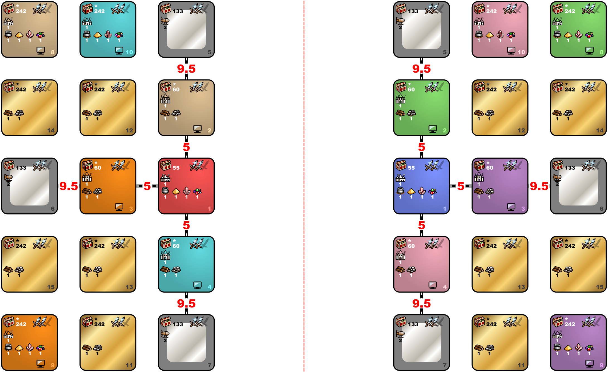

Singleplayer: Red allies with Blue, other 6 AIs together
PvP: Alliance with AIs on opponent's level
Average water, no roads, 130-200%
Pick heroes for Red and Blue (can be from different towns)
Max 42 Battle Rounds
By Warzyw
Last update: 28.06.2024
Find a way to get to the other level or surrender. Both of you if playing PvP.

Features
| Index | Zones | Min | Max | Density | Min | Max | Density | Min | Max | Density |
|---|---|---|---|---|---|---|---|---|---|---|
| 55 | Human zones | 10000 | 15000 | 1 | 3000 | 6000 | 6 | 500 | 3000 | 9 |
| 60 | 2, 3, 4 | 10000 | 15000 | 1 | 3000 | 6000 | 6 | 500 | 3000 | 12 |
| 133 | Silver zones | 15000 | 20000 | 1 | 10000 | 15000 | 6 | 3000 | 6000 | 9 |
| 242 | 8, 9, 10, 11, 12, 13, 14, 15 | 20000 | 30000 | 1 | 15000 | 20000 | 6 | 10000 | 15000 | 9 |
| Zone | Terrain |
|---|---|
| 1, 2, 3, 4 | Same as Town |
| 5, 6, 7, 8, 9, 10, 11, 12, 13, 14, 15 | All allowed |
| Rule Type | Object | Value | Frequency | Max per Zone | Max on Map |
|---|---|---|---|---|---|
| Disable | Town Gate | ||||
| Enable / Edit | Ancient Altar | default | 50 | 1 | 3 |
| Enable / Edit | Griffin Conservatory | default | 50 | default | default |
| Enable / Edit | Dragon Fly Hive | default | 50 | default | default |
| Enable / Edit | Pirate Cavern | default | 50 | default | default |
| Enable / Edit | Spit | default | default | default | default |
| Enable / Edit | Ivory Tower | default | 50 | default | default |
| Enable / Edit | Experimental Shop | default | 40 | default | default |
| Enable / Edit | Wolf Raider Picket | default | 35 | default | default |
| Enable / Edit | Dragon Utopia | default | 50 | default | default |
| Disable | Prison — any amount of hero xp | ||||
| Enable / Edit | Cover of Darkness | 500 | 20 | 1 | no limit |
| Disable | Magic Well | ||||
| Disable | Redwood Observatory |
| Rule Type | Object | Value | Frequency | Max per Zone |
|---|---|---|---|---|
| Enable / Edit | Town Gate | default | 9999 | 1 |
| Rule Type | Object | Value | Frequency | Max per Zone |
|---|---|---|---|---|
| Enable / Edit | Prison — hero with 0 xp | 10000 | 9999 | 1 |
| Enable / Edit | Town Gate | default | 9999 | 1 |
| Rule Type | Object | Value | Frequency | Max per Zone |
|---|---|---|---|---|
| Enable / Edit | Prison — hero with 2000 xp | 1000 | 9999 | 3 |